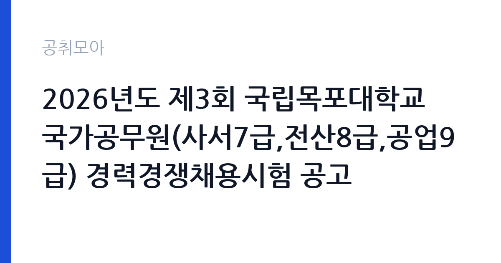

[국가기관] 2026년도 제3회 국립목포대학교 국가공무원(사서7급,전산8급,공업9급) 경력경쟁채용시험 공고
목포대학교 · 전남 · 마감 2026-11-09 (D-12) · 출처 나라일터

한눈에 보는 모집 조건
| 기관 | 목포대학교 |
|---|---|
| 공고명 | 2026년도 제3회 국립목포대학교 국가공무원(사서7급,전산8급,공업9급) 경력경쟁채용시험 공고 |
| 고용형태 | 정규직 |
| 근무지 | 전남 |
| 게시일 | 2026-10-28 |
| 마감일 | 2026-11-09 (D-12) |
지원자격, 이렇게 읽으세요
- 사서7급 1명 전산8급 1명 공업9급(전기) 1명 공업9급(기계) 1명
- 접수 ~2026-11-09 마감
- 세부 조건은 원문 공고문 확인
정규직 채용은 기간의 정함이 없는 근로계약을 전제로 합니다. 수습 기간을 두고 평가한 뒤 정규직으로 확정하는 절차가 일반적이며 기관의 인사 규정과 임금 체계를 적용받습니다. 이번 공고는 목포대학교에서 직접 진행하는 자체 전형으로, 응시자격과 제출서류는 공고문에 항목별로 제시됩니다. 사서 직무는 정사서 자격증을 필수로 요구하는 경우가 가장 많습니다. 1급 또는 2급 정사서 자격을 확인하고, 준사서 자격만으로 지원 가능한 공고인지 구분해야 합니다. 도서관 경력과 프로그램 운영 경력은 우대 사항으로 자주 등장합니다. 공공도서관은 지방공무원 임용 또는 공무직 채용으로 나뉘므로 신분 형태를 먼저 확인하십시오. 근무 시간대가 주간과 야간으로 나뉘는 곳도 있습니다. 서류는 접수 마감 이후 보완이 되지 않으므로 자격 요건과 증빙 서류를 마감 전에 모두 갖춰야 합니다. 공고문에 명시된 우대 사항은 해당 여부를 확인해 증빙을 첨부해야 가점이 반영됩니다. 학력이나 전공 요건이 없는 공고라도 제출서류 목록은 그대로 적용되므로 서류 준비 부담은 줄지 않습니다.
이 공고의 포인트
이 공고의 첫 번째 포인트는 고용 형태입니다. 수습 기간 평가를 통과하면 기간의 정함이 없는 신분이 되어 고용이 안정됩니다. 두 번째는 업무 범위가 명확하다는 점입니다. 사서 직무로 채용되므로 배치 이후 담당 업무가 크게 흔들리지 않습니다. 세 번째는 근무지입니다. 전남 지역 근무로 수도권 공고에 비해 지원자 분포가 넓지 않아 상대적으로 경쟁이 분산되는 경우가 있습니다. 접수 기간이 길지 않아 서류 준비와 자격 확인을 동시에 진행해야 합니다. 다만 선발 인원이 1명으로 많지 않아 자격을 갖춘 지원자가 몰리면 경쟁률이 높아질 수 있습니다.
전형은 어떻게 진행되나
전형은 서류심사와 면접심사를 기본으로 하고 직무에 따라 필기나 실기, 체력검정이 추가됩니다. 서류 단계에서는 응시자격 충족 여부와 제출서류 형식을 확인하며 이 단계에서 탈락하는 지원자가 적지 않습니다. 면접은 직무 이해도와 경험을 확인하는 방식으로 진행되고 발표는 개별 통보나 홈페이지 게시로 이뤄집니다. 최종합격 이후에는 결격사유 조회와 채용 신체검사가 이어지며 이 절차에서 문제가 확인되면 합격이 취소될 수 있습니다. 구체적인 전형 단계와 배점은 공고문에 표로 정리되어 있으니 원문을 기준으로 준비하십시오. 응시 수수료가 있는 경우 환불 기준과 기한이 정해져 있으니 접수 전에 확인하십시오.
원문에서 확인한 전형 방식
국립목포대학교 공고 제2026-412호 국립목포대학교에서는 공무원임용시험령 제3조 및 제47조에 따라 우수 인재의 공직유치를 위하여 국가공무원 경력경쟁채용시험을 다음과 같이 시행하오니 많은 응시 바랍니다. □ 채용예정 직급 및 인원 : 사서7급 1명, 전산8급 1명, 공업9급(전기) 1명, 공업9급(기계) 1명 □ 접수기간 : 2026. 11. 5.(목) ~ 11. 9.(월), 18:00 ※ 자세한 사항은 붙임 공고문을 참고하시기 바랍니다.
이런 분께 추천해요
- 정사서 자격을 보유한 분
- 이용자 응대와 프로그램 운영 경험이 있는 분
- 교대 근무 일정을 수용할 수 있는 분
지원 전 체크리스트
- 응시자격 요건과 경력 기준을 충족하는가 — 경력은 증명서로 입증해야 합니다
- 수습 기간과 정규직 전환 조건을 확인했는가
- 제출서류 목록을 모두 준비했는가 — 누락 시 서류 단계에서 탈락합니다
- 접수 마감 2026-11-09 이전에 접수 방식을 확인해 제출했는가
모집 일정과 제출 타이밍
접수 마감은 2026-11-09이고 공고는 2026-10-28에 게시되었습니다. 준비 기간 12일 안에 서류 작성, 증빙 발급, 접수를 모두 마쳐야 하므로 주말을 포함해 일정을 미리 나누는 것이 좋습니다. 특히 경력 기술서나 직무수행계획서를 요구하는 공고는 작성에 시간이 걸리므로 첫날 초안을 잡으십시오. 서류 합격자 발표와 면접 사이 간격이 짧은 경우가 많아 면접 예상 질문은 서류 제출 전에 정리해 두는 편이 유리합니다. 마감 직전에는 접속이 몰리므로 여유를 두고 제출하십시오. 제출 서류는 공고문에 적힌 순서대로 정리하면 담당자가 확인하기 쉬워 누락이 줄어듭니다. 전남 근무지는 도서·산간 지역이 포함될 수 있어 근무지 세부 주소를 반드시 확인하십시오. 마감까지 2주 안팎이 있어 준비할 시간은 있지만 미루면 촉박해집니다. 선발 인원이 한두 명 수준이라 지원자 개개인의 서류 완성도가 그대로 평가에 반영됩니다.
직무 이해하기: 국가기관
교육기관은 학교 교육과 교원 연수, 교육 행정을 담당합니다. 교육청은 관내 학교를 지원하고, 대학은 학사와 연구, 학생 지원 업무를 운영합니다. 예산과 인사 규정이 교육부 지침과 자체 규정을 함께 따르므로 절차가 엄격합니다. 사서 업무는 자료를 수집·정리하고 이용자가 원하는 정보를 찾도록 돕는 일입니다. 자료의 분류와 목록 작성, 서가 정리, 대출·반납 처리가 기본이고 이용자에게 자료를 안내하고 참고 질문에 답합니다. 프로그램 기획과 운영, 독서 진흥 행사 준비도 포함됩니다. 최근에는 전자자료와 데이터베이스 관리, 시스템 운영 업무 비중이 늘고 있습니다. 학교나 공공도서관은 개관 시간에 맞춘 교대 근무가 있을 수 있습니다. 업무는 혼자 처리하기보다 부서 단위로 나눠 진행되므로 담당 구역과 협업 범위를 입사 초에 확인하는 것이 중요합니다. 업무 강도와 근무 시간대는 부서 배치에 따라 달라지므로 면접에서 확인하는 것이 가장 정확합니다.
자기소개서 작성 팁
사서 지원서는 자료를 다루는 전문성과 이용자 서비스 태도를 함께 보여줘야 합니다. 실습이나 근무 중에 진행한 목록 작업, 프로그램 운영 사례를 수치와 함께 쓰십시오. 독서모임이나 교육 프로그램을 기획해 참여자를 늘린 경험은 강한 소재입니다. 디지털 자료 관리 경험이 있다면 최근 도서관 업무 변화와 연결해 서술하십시오. 직무 경험이 많지 않다면 경험의 양보다 과정을 구체적으로 쓰는 편이 낫습니다. 어떤 상황에서 무엇을 판단했고 어떤 결과가 나왔는지 순서대로 서술하면 신뢰가 생깁니다. 지원 동기와 기여 방안은 한 문단씩 짧게 유지하고, 가장 자신 있는 경험에 분량을 몰아주십시오. 마지막 문장은 포부보다 구체적인 실행 계획으로 끝내는 것이 좋습니다.
면접 준비 포인트
면접에서는 자료 활용 능력과 이용자 응대를 확인합니다. 이용자가 찾는 자료가 없을 때 어떻게 대안을 제시할지, 프로그램 참여자가 적을 때 어떻게 개선할지 묻습니다. 분류 체계와 목록 작성 방식을 이해하고 있는지도 확인합니다. 독서 진흥 사업 경험이 있다면 구체적인 성과로 답하십시오. 답변은 상황, 판단, 조치의 순서로 정리하면 전달이 분명해집니다. 모르는 질문에는 모른다고 밝히고 확인 방법을 제시하는 편이 억지 답변보다 낫습니다. 마지막에는 근무 의사와 함께 2026-11-09 이후 일정에 언제든 응할 수 있다는 점을 전달하십시오. 지원 기관의 최근 사업이나 조직 개편 내용을 확인해 두면 지원 동기 질문에서 차이가 납니다.
급여·근무조건 읽는 법
목포대학교의 구체적인 보수 수치는 이 공고 원문의 처우 항목과 보수표에서 확인해야 합니다. 공시 자료로 확인되지 않은 금액은 이 글에서 추정해 제시하지 않습니다. 알리오 2025년 결산 공시 기준 공공기관 전체 일반정규직 1인당 평균보수는 7,376만 9천원, 신입사원 평균초임은 4,031만 6천원입니다(무기계약직 미포함). 사서의 보수는 채용 신분에 따라 달라집니다. 지방공무원으로 임용되면 지방공무원 보수규정의 봉급표를 적용받고, 공무직이나 계약직이면 기관 임금표를 따릅니다. 공무원 신분은 호봉과 수당 체계가 법령으로 정해져 있어 예측이 가능하고, 계약직은 계약 기간과 보수 총액이 공고문에 명시됩니다. 구체적인 금액은 공고문의 보수 항목에서 확인하십시오. 2026년 적용 최저임금은 시급 10,320원, 월 환산 2,156,880원(주 40시간·209시간 기준)입니다. 고용노동부 고시 제2025-47호로 확정된 금액입니다. 공고문에 금액이 제시되지 않은 항목은 원문 보수표나 처우 설명에서 확인해야 하며 확인되지 않은 수치는 쓰지 않는 것이 원칙입니다. 비교할 때는 월 급여뿐 아니라 상여·명절휴가비·복지포인트·초과근무수당까지 포함한 연간 총액으로 계산하십시오. 기간제라면 계약 기간 동안의 총액을, 무기계약이라면 호봉 상승과 정년까지의 누적 소득을 기준으로 판단하는 편이 정확합니다.
자주 묻는 질문
- 선발 인원은 몇 명인가요?
공고문 기준 1명입니다. 직종별로 인원이 나뉘는 경우가 있으니 모집분야 항목을 함께 확인하십시오. - 근무지는 어디인가요?
전남 지역의 목포대학교 소속 근무지입니다. 세부 주소와 출퇴근 조건은 원문 공고문에서 확인할 수 있습니다. - 보수는 얼마인가요?
채용 신분(정규직)과 기관 임금 규정에 따라 정해지며 구체적인 금액은 공고문 처우 항목에 제시됩니다. 금액이 공개되지 않은 경우에는 원문의 보수표를 확인하십시오.
함께 보면 좋은 공고
[국가기관] 2026년 제주세관 공무직(청소원, 여행자통관지원요원) 채용 공고 — 마감 2026-11-05[국가기관] 2026년 제4회 기상청 공무원 경력경쟁채용시험 공고 — 마감 2026-11-09[국가기관] 공주교육대학교 국가직공무원 행정9급 전입 희망자 모집 공고 — 마감 2026-11-10출처: 나라일터 공개정보를 바탕으로 공취모아가 정리한 안내글입니다. 모집 조건·일정은 변경될 수 있으니 지원 전 반드시 원문 공고문을 확인하세요. 본 글은 정보 제공용이며 합격을 보장하지 않습니다.